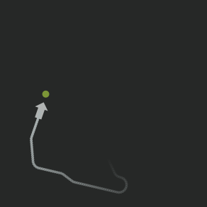

Play Snake in NodeBox! Use the left and right keys to navigate, up and down to go faster or slower:
class Snake:
def__init__(self, x, y, angle=-90, velocity=1.0):
""" Snake class.
With a class you can describe a single "thing" or object
of which you can have multiple instances.
In this case we only have a single snake in the game,
but it's still a good idea to create a class for it
because all of the snake's properties can be grouped
together instead of cluttering the main code loop.
"""self.x = x
self.y = y
self.angle = angle
self.velocity = velocity
self.vx = 0self.vy = 0self.trail = []defupdate(self, m=5, n=30):
# Store previous positions in a trail list.# Each update, an (x, y, angle) tuple is pushed into the list.# The list stores a maximum of n elements,# anything beyond that is chopped off.if FRAME % 2 == 0:
self.trail.insert(0, (self.x, self.y, self.angle))iflen(self.trail) > n:
self.trail = self.trail[:n]# Keyboard interaction:# - the up key increases the snake's speed# - the down key decreases the snake's speed# - the left key moves the snake's bearing counter-clockwise# - the right key moves the snake's bearing clockwiseif keydown:
if keycode == KEY_UP:
self.velocity += m*0.02if keycode == KEY_DOWN:
self.velocity -= m*0.04if keycode == KEY_LEFT:
self.angle -= m + self.velocity*2if keycode == KEY_RIGHT:
self.angle += m + self.velocity*2# The snake's speed is limited to m.# Now that we have a speed and a bearing angle,# we can use cos and sin to compute vx and vy,# the respective increase to the snake's x and y position.self.velocity = max(0, min(self.velocity, m))self.vx = cos(radians(self.angle)) * self.velocityself.vy = sin(radians(self.angle)) * self.velocityself.x += self.vxself.y += self.vydefentangled(self, threshold=10):
# A collision occurs when the snake's head is too near# a segment of its trail.# We don't check the first segments,# these are obviously always too near the head.# Also, the x and y position should be slightly different,# else we get a false collision when the snake is standing still# (and all of its segments are at the same position as the head).for x, y, angle inself.trail[15:]:
if x != self.xand y != self.y:
ifabs(x-self.x) < threshold andabs(y-self.y) < threshold:
returnTruereturnFalseclass Food:
def__init__(self, x=None, y=None, life=350):
# By default, put food somewhere on the screen randomly,# but not too close near the edges.if x == None: x = WIDTH*0.1 + random(WIDTH*0.8)if y == None: y = HEIGHT*0.1 + random(HEIGHT*0.8)self.x = x
self.y = y
self.life = life
self.gone = Falsedefupdate(self):
# Food slowly fades away.# When no life remains, it is "gone" and the game is over.ifself.life > 0:
self.life -= 1else:
self.gone = Truefrommathimport cos, sin, radians
size(300, 300)speed(30)
snake = Snake(WIDTH/2, HEIGHT/2)
snake_trail = 30
snake_trail_max_length = 100
food = Food()time = 400defdraw():
background(0.1)global snake, snake_trail, snake_trail_max_length
global food
globaltime# When the snake collides with its own tail# or the food is gone, the game is over.# Otherwise, keep updating snake position and food life.if snake.entangled()or food.gone:
fill(1, 0, 0)align(CENTER)text("game over!", 0, 100, width=WIDTH)else:
snake.update(n=min(snake_trail, snake_trail_max_length))
food.update()fill(0.75)# Draw the snake's head.rotate(-snake.angle)arrow(snake.x+12, snake.y, 24)# Draw all of the snake's segments.# These are stored as (x, y, angle) tuples# in the snake.trail list attribute.
i = 0
f = fill()for x, y, angle in snake.trail:
opacity = 1 - float(i) / len(snake.trail)fill(f.r, f.g, f.b, opacity)push()rotate(-angle)oval(x-2, y-2, 4, 4)pop()
i += 1# The food slowly fades away as its life decreases.fill(0.7, 0.9, 0, float(food.life)/time)oval(food.x-5, food.y-5, 10, 10)# If the snake hits the food,# relocate the food and make its trail longer.ifabs(food.x-snake.x) < 5andabs(food.y-snake.y) < 5:
food = Food(life=time-snake_trail)
snake_trail += 10


Snake!
Posted by Tom De Smedt on Aug 21, 2007
Play Snake in NodeBox! Use the left and right keys to navigate, up and down to go faster or slower: